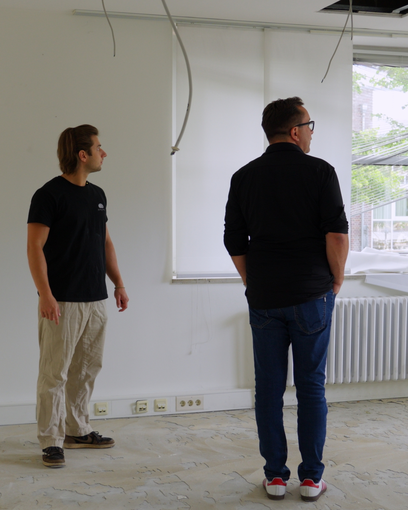

Was kostet Social Media Marketing für Unternehmen?

Die Frage nach den Kosten ist meistens die erste, die Unternehmer stellen – und das völlig zu Recht. Das Problem: Die Antwort schwankt enorm. Zwischen 500 und über 10.000 Euro pro Monat ist am Markt alles zu finden, oft ohne dass erkennbar wäre, worin der Unterschied liegt. Dieser Artikel gibt Ihnen eine ehrliche Einordnung, was Social Media Marketing kostet, welche Preismodelle es gibt, wie sich Agentur und Eigenleistung wirklich vergleichen und woran Sie ein faires Angebot erkennen.
Das Wichtigste in Kürze
- Die Marktspanne ist riesig – von rund 500 bis über 10.000 Euro monatlich. Der Preis sagt für sich genommen wenig aus, entscheidend ist der Leistungsumfang.
- Honorar und Werbebudget sind zwei Posten. Ein gutes Angebot weist beide getrennt aus.
- Selbst machen ist selten „kostenlos“ – die eigene Arbeitszeit ist der größte versteckte Posten.
- Planen Sie ab 3 Monaten ein, bevor Sie Ergebnisse bewerten – oft geht es schneller. Früher abzubrechen verschenkt das gesamte investierte Budget.
- Ein einziger Neukunde kann je nach Branche die Investition mehrerer Monate zurückholen.
- Die kurze Antwort
- Wovon die Kosten abhängen
- Preis-Orientierung nach Leistungsumfang
- Die Preismodelle im Vergleich
- Honorar vs. Werbebudget
- Selbst machen vs. Agentur: die echte Rechnung
- Versteckte Kosten, auf die Sie achten sollten
- Was ist es wert? Ein Rechenbeispiel
- Häufige Fehler bei der Budgetplanung
- Woran Sie ein faires Angebot erkennen
- Unser Ansatz
- Häufige Fragen (FAQ)
- Fazit
Die kurze Antwort
Am Markt reicht die Spanne von etwa 500 bis über 10.000 Euro pro Monat. Für kleine und mittlere Unternehmen, die eine laufende Betreuung mit regelmäßiger Content-Produktion wollen, liegt der übliche Rahmen deutlich darunter – meist im mittleren vierstelligen Bereich pro Quartal.
Diese Spanne ist so groß, weil „Social Media Marketing“ alles Mögliche bedeuten kann: von vier einfachen Beiträgen im Monat bis zur kompletten Betreuung mehrerer Kanäle inklusive Strategie, Produktion, Community-Management und Reporting. Ohne Leistungsbeschreibung ist eine Preisangabe wertlos.
Wovon die Kosten abhängen
Sechs Faktoren bestimmen praktisch jeden Preis in diesem Bereich:
- Art des Contents: Ein professionell produziertes Video mit Konzept, Dreh und Schnitt kostet ein Vielfaches eines Handyfotos mit Text – bringt aber auch ein Vielfaches an Reichweite und Vertrauen.
- Menge: Vier Videos im Monat sind günstiger als zwölf. Die eigentliche Frage ist, welche Menge Ihre Ziele überhaupt erfordern.
- Anzahl der Plattformen: Nur Instagram oder zusätzlich TikTok, YouTube, Facebook und LinkedIn? Jede weitere Plattform bedeutet Aufwand für Formatierung und Anpassung.
- Leistungsumfang: Reine Produktion oder Komplettpaket mit Strategie, Redaktionsplan, Posting, Community-Management und Reporting?
- Drehaufwand vor Ort: Anfahrt, Drehdauer, Anzahl der Drehorte und ob Personen vor der Kamera stehen, die vorbereitet werden müssen.
- Nutzungsrechte: Nur Social Media oder auch Website, Messe und bezahlte Anzeigen? Weiter gefasste Rechte erhöhen den Preis – sind aber oft ihr Geld wert.
Preis-Orientierung nach Leistungsumfang
Die folgende Übersicht ist eine Orientierung am Markt, keine Preisliste – seriöse Anbieter kalkulieren individuell, weil sich Aufwand und Ziele stark unterscheiden. Sie hilft aber einzuordnen, was hinter einer Zahl typischerweise steckt:
| Umfang | Typische Leistung | Für wen geeignet |
|---|---|---|
| Einzelner Drehtag | Ein Drehtag vor Ort, daraus mehrere fertig geschnittene Videos. Posting übernehmen Sie selbst. | Erstes Ausprobieren, einzelne Kampagnen, Unternehmen mit internem Social-Media-Verantwortlichen |
| Kleines Monatspaket | Regelmäßige Content-Produktion in überschaubarem Umfang, meist eine Plattform. | Kleine Betriebe, die konstant sichtbar sein wollen, ohne intern Kapazität aufzubauen |
| Laufende Betreuung | Strategie, monatlicher Drehtag, Schnitt, Posting und Abstimmung über mehrere Plattformen. | Der Standardfall für die meisten mittelständischen Unternehmen |
| Komplettbetreuung | Zusätzlich Community-Management, Redaktionsplanung, Reporting und laufende Optimierung. | Unternehmen mit klaren Wachstums- oder Recruiting-Zielen und mehreren Standorten |
| Ads-Betreuung | Aufsetzen und Optimieren bezahlter Kampagnen – als Honorar, zusätzlich zum Werbebudget. | Ergänzend, sobald organischer Content bereits funktioniert |
Wichtig: Vergleichen Sie nie Preise, sondern immer Leistungspakete. Zwei Angebote mit identischem Monatsbetrag können sich in Videoanzahl, Drehaufwand und Nutzungsrechten um ein Vielfaches unterscheiden.
Die Preismodelle im Vergleich
Einzelprojekt
Sie buchen einen abgegrenzten Auftrag – etwa einen Drehtag oder einen Imagefilm – und bekommen ein fertiges Ergebnis. Vorteil: überschaubares Risiko, ideal zum Testen. Nachteil: Einmaliger Content erzeugt keinen dauerhaften Effekt. Social Media belohnt Konstanz, nicht Einzelaktionen.
Monatliches Paket
Ein fester Betrag pro Monat für eine vereinbarte Leistung. Vorteil: Planungssicherheit auf beiden Seiten, konstanter Rhythmus, mit der Zeit sinkt der Abstimmungsaufwand spürbar. Nachteil: Sie binden sich für einen gewissen Zeitraum – was allerdings genau der Zeitraum ist, den Ergebnisse ohnehin brauchen. Für die meisten Unternehmen ist das die sinnvollste Variante.
Retainer
Umfassende Dauerbetreuung inklusive Strategie, Produktion, Community-Management und Reporting. Vorteil: Sie haben faktisch ein ausgelagertes Marketing-Team. Nachteil: Höchster Kostenpunkt, lohnt sich erst ab einer gewissen Unternehmensgröße.
Erfolgsbasierte Modelle
Bezahlung nach Ergebnis, etwa pro Bewerbung oder Anfrage. Klingt attraktiv, hat aber einen Haken: Wer nur für Abschlüsse bezahlt wird, optimiert auf kurzfristige Zahlen statt auf langfristigen Markenaufbau. Zudem hängt der Erfolg stark von Faktoren ab, die die Agentur nicht kontrolliert – etwa wie schnell Sie auf Anfragen reagieren. Prüfen Sie solche Modelle besonders genau.
Honorar vs. Werbebudget – zwei verschiedene Dinge
Ein Missverständnis, das regelmäßig zu Ärger führt: Agenturhonorar und Werbebudget sind getrennte Posten. Das Honorar bezahlt Arbeit – Strategie, Dreh, Schnitt, Betreuung. Das Werbebudget fließt direkt an Meta, TikTok oder Google, damit Beiträge bezahlt ausgespielt werden.
Wenn ein Angebot beides vermischt, sollten Sie nachfragen. Sonst wissen Sie nicht, wie viel tatsächlich in Ihre Sichtbarkeit fließt und wie viel in Dienstleistung.
Zur Größenordnung: Damit eine bezahlte Kampagne genug Daten für sinnvolle Optimierung sammelt, sollten Sie ab etwa 500 Euro pro Monat und Kampagne einplanen. Deutlich kleinere Budgets führen meist dazu, dass die Kampagne nie aus der Lernphase kommt – das Geld ist dann faktisch verloren, ohne dass Sie verwertbare Erkenntnisse gewinnen.
Wichtig: Anzeigen sind kein Pflichtprogramm. Organische Reichweite kostet kein Werbebudget – guter Content erreicht auch ohne einen einzigen Euro Anzeigenbudget tausende Menschen. Viele unserer Kunden fahren ausschließlich organisch sehr gut. Wer knapp kalkuliert, investiert das Geld deshalb besser in Produktion als in Ads.
Es gibt allerdings Situationen, in denen sich Anzeigen als Ergänzung enorm lohnen:
- Recruiting: Wenn Sie eine bestimmte Berufsgruppe im Umkreis erreichen wollen, bringt gezielte Ausspielung Bewerbungen deutlich schneller als organische Reichweite allein.
- Lokale Angebote: Restaurants, Einzelhandel oder Studios können exakt den Radius bewerben, aus dem Kunden tatsächlich kommen.
- Zeitkritische Aktionen: Eröffnungen, Saisonstart oder befristete Angebote – überall dort, wo organischer Aufbau schlicht zu langsam wäre.
- Skalieren, was bereits funktioniert: Der wirkungsvollste Einsatz überhaupt – ein organisch erfolgreiches Video zusätzlich bewerben, statt auf gut Glück neue Anzeigen zu bauen.
Wie hoch das Budget sinnvollerweise ausfällt, variiert je nach Branche und Ziel allerdings stark. 500 Euro sind eine sinnvolle Untergrenze, damit eine Kampagne überhaupt lernen kann – nach oben gibt es rechnerisch keine feste Grenze. Entscheidend ist allein die Bilanz: Solange aus dem eingesetzten Werbebudget mehr Gewinn zurückkommt, als Sie ausgeben, können Sie es theoretisch beliebig weiter erhöhen. Genau deshalb fahren große Unternehmen Anzeigenbudgets im hohen fünfstelligen Bereich pro Monat – nicht, weil sie es sich leisten können, sondern weil sich jeder zusätzliche Euro rechnet.
Für den Start heißt das: Beginnen Sie klein, messen Sie sauber, was pro Anfrage oder Bewerbung an Werbekosten anfällt, und skalieren Sie erst dann, wenn die Rechnung aufgeht.
Die Reihenfolge bleibt aber immer dieselbe: erst guter Content, dann Werbebudget. Anzeigen verstärken, was funktioniert – sie reparieren nicht, was nicht funktioniert.
Selbst machen vs. Agentur: die echte Rechnung
„Das machen wir selbst, das kostet ja nichts“ – ein verbreiteter Gedanke, der bei ehrlicher Rechnung oft nicht standhält. Denn Eigenleistung ist nicht kostenlos, sie ist nur nicht auf einer Rechnung sichtbar.
Was tatsächlich anfällt, wenn Sie regelmäßig Content produzieren:
- Arbeitszeit: Planung, Dreh, Schnitt, Texten, Posting und Community-Arbeit summieren sich für zwei bis drei Videos pro Woche schnell auf mehrere Stunden wöchentlich. Rechnen Sie das mit Ihrem internen Stundensatz durch.
- Einarbeitung: Schnittprogramm, Formatwissen, Algorithmus-Verständnis. Das kostet vor allem am Anfang viel Zeit.
- Ausrüstung: Mikrofon, Licht, Stativ, Schnittsoftware. Überschaubar, aber vorhanden.
- Opportunitätskosten: Die Stunden fehlen im Kerngeschäft – dort, wo Sie am meisten Wert erzeugen.
- Ausfallrisiko: Wenn die zuständige Person im Urlaub, krank oder ausgelastet ist, steht der Kanal still. Genau daran scheitern die meisten internen Lösungen.
Wann sich selbst machen lohnt: Wenn intern jemand ist, der Talent, Interesse und dauerhaft geschützte Zeit hat. Das ist seltener der Fall, als man vorher denkt.
Wir haben diese Abwägung ausführlich in einem eigenen Artikel behandelt: Social Media selber machen oder Agentur beauftragen?
Versteckte Kosten, auf die Sie achten sollten
- Nutzungsrechte: Dürfen Sie das Material auch auf Ihrer Website, in Anzeigen oder auf Messen verwenden? Wenn nicht, brauchen Sie später neue Produktionen.
- Musiklizenzen: Kommerziell nutzbare Musik ist lizenzpflichtig. Bei geschäftlichen Accounts kann fehlende Lizenzierung zu Sperrungen oder Abmahnungen führen.
- Korrekturschleifen: Wie viele Änderungen sind enthalten? Unbegrenzte Schleifen gibt es selten – und jede zusätzliche kostet.
- Anfahrt und Reisezeit: Bei Anbietern weiter weg ein realer Kostenfaktor.
- Vertragslaufzeit und Kündigungsfrist: Ein zwölfmonatiger Vertrag ohne Ausstiegsmöglichkeit ist ein erhebliches Risiko, wenn die Zusammenarbeit nicht passt.
- Setup-Gebühren: Manche Anbieter berechnen einmalig Strategie oder Kanalaufbau zusätzlich. Legitim – sollte aber vorher genannt werden.
Was ist es wert? Ein Rechenbeispiel
Die entscheidende Frage lautet nicht „Was kostet es?“, sondern „Was bringt es mir?“. Und die lässt sich überschlagen.
Ein einziger Neukunde, der über Social Media kommt, kann die Investition mehrerer Monate wieder hereinholen.
Rechenbeispiel Handwerksbetrieb: Angenommen, ein durchschnittlicher Auftrag bringt 4.000 Euro Umsatz bei 25 Prozent Marge, also 1.000 Euro Deckungsbeitrag. Bei einem monatlichen Content-Paket im niedrigen vierstelligen Bereich reichen bereits ein bis zwei zusätzliche Aufträge pro Monat, um die Investition zu decken. Alles darüber ist Gewinn – plus der Markenaufbau, der langfristig weiterwirkt.
Rechenbeispiel Recruiting: Für Pflege, Handwerk und Gastronomie ist dieser Hebel oft noch größer. Eine unbesetzte Fachkraftstelle kostet ein Unternehmen jeden Monat bares Geld – durch abgelehnte Aufträge, Überstunden oder Leiharbeit. Wenn Social Media diese Stelle zwei Monate früher besetzt, hat sich das Budget meist schon gerechnet. Klassische Stellenanzeigen kosten dabei häufig mehr und erreichen nur Menschen, die aktiv suchen.
Vergleichen Sie außerdem mit den Alternativen: Eine Zeitungsanzeige, ein Messestand oder ein Radiospot kosten oft deutlich mehr – bei geringerer, kurzlebigerer und vor allem nicht messbarer Reichweite.
Häufige Fehler bei der Budgetplanung
- Zu wenig investieren. Ein Beitrag pro Monat für ein Minimalbudget bringt keine Ergebnisse. Dann lieber ein paar Monate sparen und danach richtig starten.
- Nur auf Werbebudget setzen. Anzeigen ohne guten Content verbrennen Geld. Erst der Content, dann die Reichweite dahinter.
- Zu früh aufgeben. Rechnen Sie mit rund drei Monaten Aufbauarbeit – oft geht es schneller. Wer nach vier Wochen abbricht, hat das gesamte bis dahin investierte Budget verschenkt.
- Nur auf den Preis schauen. Das günstigste Angebot ist selten das wirtschaftlichste. Entscheidend ist der Preis pro brauchbarem Ergebnis.
- Kein Budget für Anpassungen einplanen. Nach zwei bis drei Monaten wissen Sie mehr über Ihre Zielgruppe. Dafür sollte Spielraum bleiben.
- Erfolg an den falschen Zahlen messen. Follower sind eine Eitelkeitszahl. Relevant sind Anfragen, Bewerbungen und Umsatz.
Woran Sie ein faires Angebot erkennen
Nutzen Sie diese Punkte als Checkliste, wenn Sie Angebote vergleichen:
- Konkrete Leistungsbeschreibung: Anzahl und Art der Inhalte, Drehtage, Plattformen, enthaltene Leistungen wie Schnitt, Untertitel und Posting.
- Honorar und Werbebudget getrennt ausgewiesen.
- Nutzungsrechte klar geregelt – schriftlich, nicht mündlich.
- Nachvollziehbare Laufzeit mit fairer Kündigungsfrist.
- Keine garantierten Followerzahlen. Wer Reichweite garantiert, kauft sie entweder ein oder verspricht etwas, das niemand seriös zusagen kann.
- Referenzen, die man ansehen kann – idealerweise aus vergleichbaren Branchen.
- Ein Ansprechpartner statt wechselnder Zuständigkeiten.
Unser Ansatz
Wir arbeiten bewusst mit individuellen Angeboten statt mit einer festen Preisliste – weil jedes Unternehmen andere Ziele, Voraussetzungen und Budgets hat. Ein Pflegedienst, der Fachkräfte sucht, braucht etwas anderes als ein Restaurant, das seine Mittagsauslastung erhöhen will.
In einem kostenlosen Erstgespräch klären wir, was in Ihrer Situation sinnvoll ist, und erstellen ein transparentes Angebot mit klar aufgelisteten Leistungen – ohne versteckte Kosten und ohne Überraschungen. Wenn Social Media für Ihr Ziel nicht der richtige Weg ist, sagen wir das auch.
Häufige Fragen (FAQ)
Die Spanne am Markt reicht von rund 500 bis über 10.000 Euro pro Monat. Kleine und mittlere Unternehmen bewegen sich für eine laufende Betreuung mit regelmäßiger Content-Produktion meist im mittleren vierstelligen Bereich pro Quartal. Entscheidend sind Umfang, Menge des Contents und die Anzahl der Plattformen. Seriöse Anbieter erstellen deshalb ein individuelles Angebot statt einer pauschalen Preisliste.
Agenturkosten sind das Honorar für Strategie, Produktion und Betreuung. Das Werbebudget ist zusätzliches Geld, das direkt an Meta, TikTok oder Google fließt, um Beiträge bezahlt auszuspielen. Beide Posten sollten in einem Angebot getrennt ausgewiesen sein. Organischer Content funktioniert auch ohne Werbebudget, bezahlte Anzeigen ohne guten Content dagegen selten.
Auf den ersten Blick ja, weil kein Honorar anfällt. Rechnet man die eigene Arbeitszeit realistisch mit, verschiebt sich das Bild oft deutlich. Für regelmäßigen Content sollten Sie mit mehreren Stunden pro Woche für Planung, Dreh, Schnitt und Community-Arbeit rechnen, dazu Einarbeitung und Ausrüstung. Selbst machen lohnt sich vor allem, wenn intern jemand Zeit, Talent und dauerhaft Kapazität hat.
Damit eine Kampagne genügend Daten sammelt, um sinnvoll optimieren zu können, sollten Sie ab etwa 500 Euro pro Monat und Kampagne einplanen. Deutlich kleinere Budgets führen meist dazu, dass die Kampagne nie aus der Lernphase kommt. Nach oben variiert das sinnvolle Budget je nach Branche und Ziel stark: Solange aus den Anzeigen mehr Gewinn zurückkommt, als Sie ausgeben, lässt sich das Budget theoretisch beliebig erhöhen – große Unternehmen fahren monatlich hohe fünfstellige Beträge. Wichtig: Anzeigen sind kein Muss. Organischer Content funktioniert auch ohne Werbebudget – in Branchen wie Recruiting, bei lokalen Angeboten oder zeitkritischen Aktionen sind Ads als Ergänzung aber ausgesprochen wirkungsvoll.
Planen Sie ab etwa drei Monaten ein. Die ersten Wochen sind Aufbauarbeit: Themen finden, Formate testen, Reichweite aufbauen. Häufig geht es sogar deutlich schneller: Bei unserem Kunden EMPLOYA kam die erste Millionen-Reichweite bereits nach dem zweiten Drehtag. Wer nach vier Wochen abbricht, hat in der Regel das gesamte bis dahin investierte Budget verschenkt, weil der Effekt erst mit Konstanz einsetzt.
Ein faires Angebot listet konkret auf, was geliefert wird: Anzahl und Art der Inhalte, Drehtage, Plattformen, Leistungen wie Schnitt, Untertitel und Posting sowie Nutzungsrechte. Es trennt Honorar und Werbebudget, nennt die Vertragslaufzeit klar und verspricht keine garantierten Followerzahlen. Vorsicht bei Pauschalpreisen ohne Leistungsbeschreibung und bei langen Bindungsfristen ohne Ausstiegsmöglichkeit.
Ja, oft sogar besonders. Organische Reichweite hängt nicht vom Werbebudget ab, sondern von der Qualität der Inhalte – dadurch können kleine Betriebe größere Wettbewerber überholen. Entscheidend ist ein realistischer Umfang: lieber ein kleineres Paket, das über Monate konstant läuft, als ein großes, das nach kurzer Zeit abgebrochen wird.
Fazit: Nicht am falschen Ende sparen
Social Media Marketing muss nicht die Welt kosten – aber es sollte auch nicht so klein dimensioniert werden, dass es wirkungslos bleibt. Der häufigste teure Fehler ist nicht ein zu großes Budget, sondern ein zu kleines, das monatelang läuft, ohne je eine Wirkung entfalten zu können.
Vergleichen Sie deshalb keine Preise, sondern Leistungen. Achten Sie darauf, dass Honorar und Werbebudget getrennt ausgewiesen sind, dass die Nutzungsrechte geregelt sind und dass niemand Ihnen Followerzahlen garantiert. Und planen Sie von Anfang an mindestens drei Monate ein – alles andere ist verschenktes Geld.
Was würde es für Ihr Unternehmen kosten?
In einem kostenlosen Erstgespräch besprechen wir Ihre Ziele und erstellen ein transparentes Angebot – mit klar aufgelisteten Leistungen und ohne versteckte Kosten.
Kostenloses Erstgespräch →